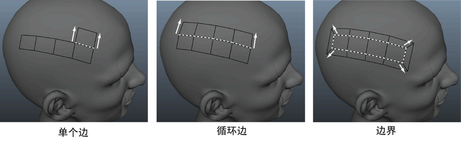
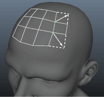

使用“延伸”(Extend)工具加快拓扑创建速度。您可以通过拖动现有边、循环边、边界和顶点快速创建新多边形。
延伸边
- 打开四边形绘制工具(Quad Draw Tool)。
- 从“四边形绘制工具”(Quad Draw Tool)标记菜单（Ctrl + Shift + 单击鼠标右键）或“四边形绘制选项”(Quad Draw Options)中选择“延伸”(Extend)选项。
- 按 Tab 在场景视图中拖动边。

选定
“边”(Edge)延伸选项后，还可以拖动顶点以创建多边形。

延伸循环边的步骤
- 选择了任何“延伸”(Extend)选项时，按 Tab 键并单击鼠标中键拖动边界边来延伸循环。